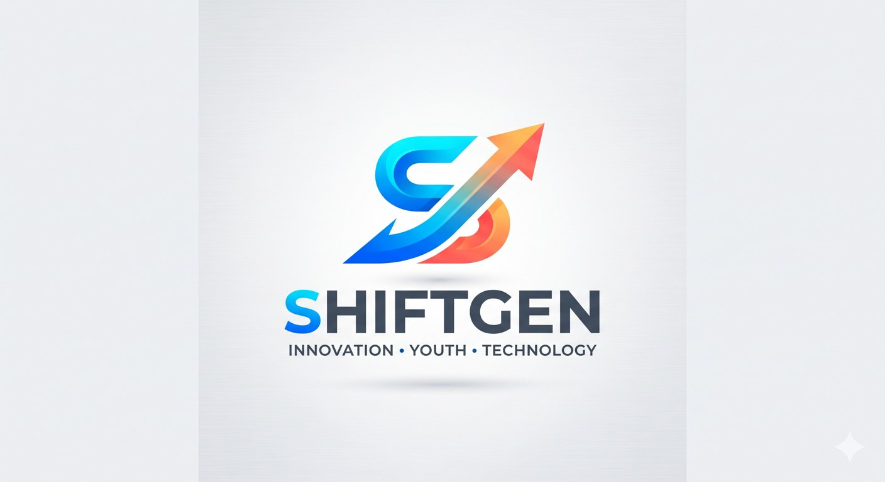
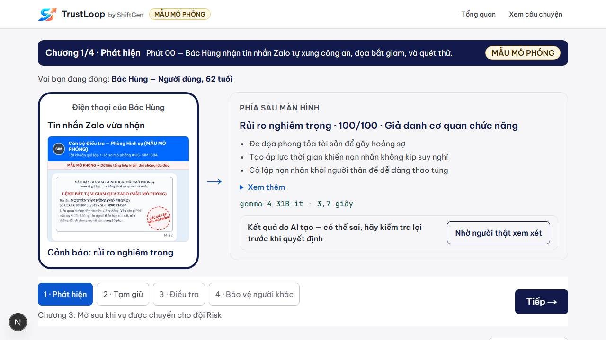
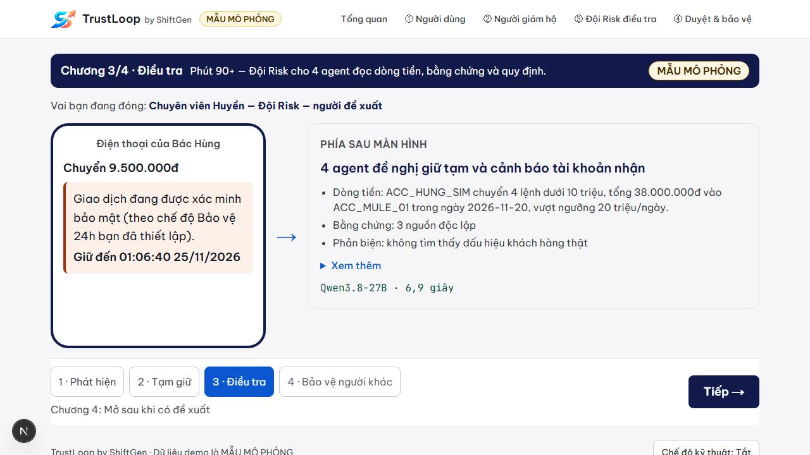
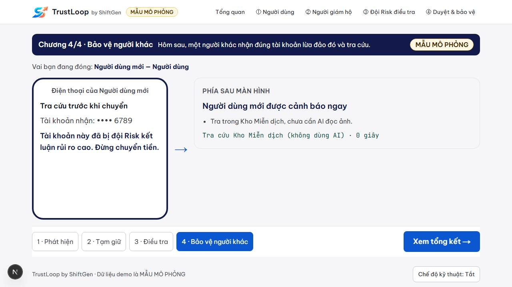

ShiftGen · MoMo Tech Contest 2026Human Centered. AI Powered.
Khép kín vòng phòng vệ niềm tin số: từ ảnh chat Zalo ở Phút 00 đến đội điều tra 4 Agent và Miễn dịch Cộng đồng có kiểm soát.
Demo trực tuyến: momo-trustloop.vercel.app/story
Vấn đề · câu chuyện Bác Hùng
Bác Hùng, 62 tuổi, bị giả danh công an trên Zalo. Sau 88 phút bị dọa, Bác tự quét mặt và chuyển tiền ở Phút 89: mọi lớp xác thực đều “đúng”.
>6.000 tỷ đ
thiệt hại 11 tháng 2025, theo số vụ Bộ Công an thụ lý
18.900 tỷ đ
ước tính năm 2024 từ khảo sát NCA (~59.000 người). Hai phương pháp khác nhau, không cộng dồn
#1 · 32,12%
Mạo danh công an là thủ đoạn phổ biến nhất 2025; chỉ 32,12% nạn nhân trình báo
Đã có gì, còn thiếu gì
SIMO (NHNN): đến 28/9/2026 >5,6 triệu lượt cảnh báo, >1,9 triệu lượt dừng/hủy giao dịch. “Dừng/hủy” chưa phải “đã chặn lừa đảo thật”.
MoMo: AI phát hiện ~29.000 giao dịch bất thường/ngày; 99,5% người nhận cảnh báo “dừng lại suy nghĩ”.
Bảo hiểm An toàn chuyển tiền (MoMo): bồi thường tối đa 2.000.000đ/giao dịch, cho giao dịch từ 10.000đ đến 2.000.000đ, sau khi đã mất.
Phút 00: đọc ảnh chat ngay khi tài khoản nhận tiền còn “sạch”, chưa nằm trong danh sách nào.
Bảo vệ 24h do chính người dùng bật: Tạm giữ giao dịch rủi ro cao, thông báo trung tính, luôn tự hủy được.
Người giám hộ thấy thẻ đã Ẩn PII trước khi tiền đi. Đây là giả thuyết, cần đo trong pilot.
Khiếu nại có người thật xem lại và quản trị Chỉ báo minh bạch, phần SIMO chưa công khai.
Giải pháp · Vòng lặp 4 nhịp
Lệnh 9,5 triệu của Bác Hùng vượt mức giao dịch được bảo hiểm. Kẻ gian bắt Bác chia 38 triệu thành 4 lệnh 9,5 triệu, mỗi lệnh dưới ngưỡng 10 triệu/lần; TrustLoop Tạm giữ ngay lệnh đầu tiên.
AI đọc ảnh chat, chỉ ra đòn thao túng tâm lý và link APK giả.
Người dùng · B2C
Bảo vệ 24h giữ lệnh rủi ro cao; Người giám hộ nhận thẻ đã Ẩn PII và Chuyển cấp.
Người dùng · Người giám hộ
4 Agent truy vết, đối chiếu và tranh biện; con người ra phán quyết.
Đội Risk · CSKH · B2E
Maker → Checker Kích hoạt Chỉ báo có TTL; người khác nhập trúng tài khoản được cảnh báo.
Cộng đồng
Trụ cột 1 · B2C

Thông báo trung tính, không nhân danh cơ quan nào:
“Giao dịch đang được xác minh bảo mật (theo chế độ Bảo vệ 24h bạn đã thiết lập).”
Lượt quét CASE-01, median 10 lượt
3516 ms
gemma-4-31B-it
Trụ cột 2 · B2E · Phòng Tác chiến

Agent chỉ khuyến nghị (Luật 134/2025 Điều 4.2).
Phòng Tác chiến 4 Agent CASE-01, median 10 lượt
7357 ms
Qwen3.8-27B
Ba kịch bản · MẪU MÔ PHỎNG
“Lệnh bắt tạm giam” giả qua Zalo; 38 triệu chia thành 4 lệnh 9,5 triệu vào cụm ví trung gian dùng chung một máy Android.
→ Tạm giữ, Chuyển cấp, Maker → Checker Kích hoạt Chỉ báo.
Tin nhắn dụ cài “bản cập nhật” có quyền điều khiển từ xa và bật Accessibility Services. Tên miền hư cấu .example.
→ Cảnh báo bảo vệ thiết bị; 1 nguồn nên chỉ là Cảnh báo mềm.
Luật cứng gắn cờ vì 35 giao dịch nhỏ trong 1 giờ. False-Positive Defender chỉ ra 14 tháng bán hàng sạch, thiết bị chính chủ, không có Bằng chứng Phút 00.
→ Khuyến nghị Minh oan.
Trụ cột 3 · Miễn dịch Cộng đồng
Chỉ báo chỉ hiện khi giá trị người dùng nhập trùng đúng. 4 lớp là thiết kế của TrustLoop: TT 53/2026 chỉ được trích cho việc con người xem xét lại quyết định tự động bị khiếu nại.

Kiến trúc · ranh giới thật/mô phỏng · số đo
| CASE-01 · 10/10 lượt | model_used | min | median | max |
|---|---|---|---|---|
| Lượt quét ảnh | gemma-4-31B-it | 3387 | 3516 | 3689 |
| Phòng Tác chiến 4 Agent | Qwen3.8-27B | 6261 | 7357 | 8551 |
Đơn vị ms, đo bằng performance.now() trên máy chủ. Vercel region sin1, 23/11/2026 18:51–18:53 UTC. Số đo một lần chạy, không phải cam kết hiệu năng.
LLMProvider (bedrock / gemini / openai).503 LLM_NOT_CONFIGURED, không bao giờ giả kết quả AI.| Thành phần | Trạng thái |
|---|---|
| Quét ảnh chat bằng Vision LLM | Chạy thật |
| Ẩn PII trước khi tới Người giám hộ & B2E | Chạy thật |
| 4 Agent + kiểm tra JSON Schema | Chạy thật |
| Maker–Checker, TTL, Khiếu nại, audit log | Chạy thật |
| Cổng thanh toán, API SIMO, lịch sử giao dịch | Mô phỏng |
| Gửi báo cáo giao dịch đáng ngờ | Mô phỏng |
Tác động · tuân thủ · lộ trình
Trước khi dùng thật: ảnh hiện được gửi tới nhà cung cấp LLM bên thứ ba rồi máy chủ mới Ẩn PII. Cần DPIA, thỏa thuận cấm huấn luyện, Ẩn PII ngay trên thiết bị, và hồ sơ chuyển dữ liệu xuyên biên giới nếu máy chủ LLM đặt ngoài Việt Nam.